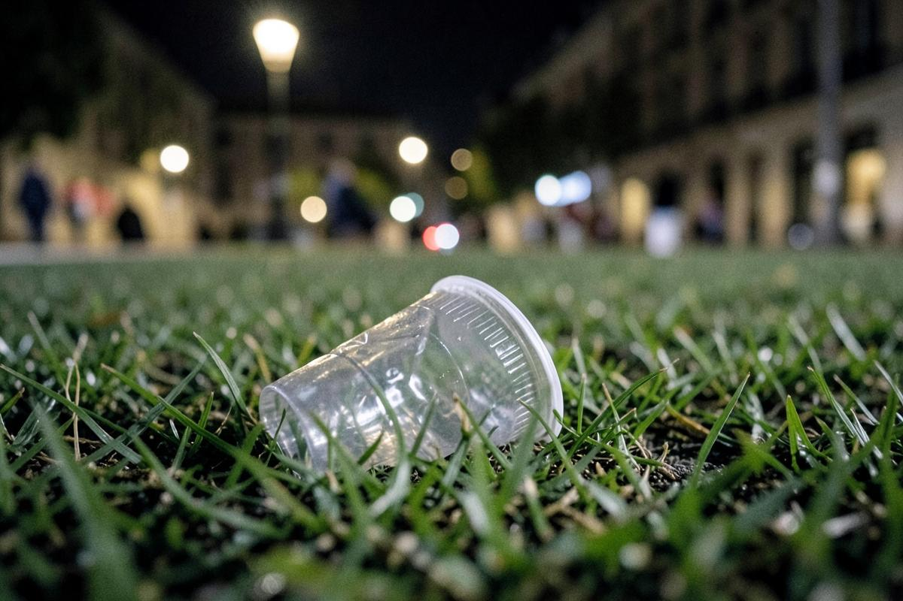
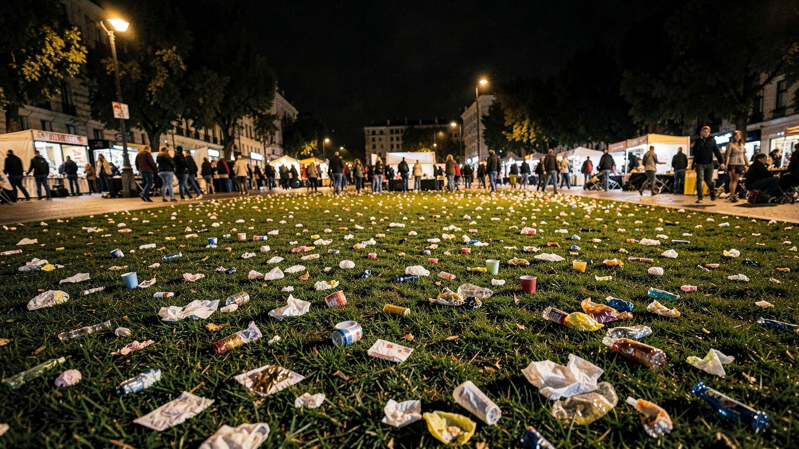
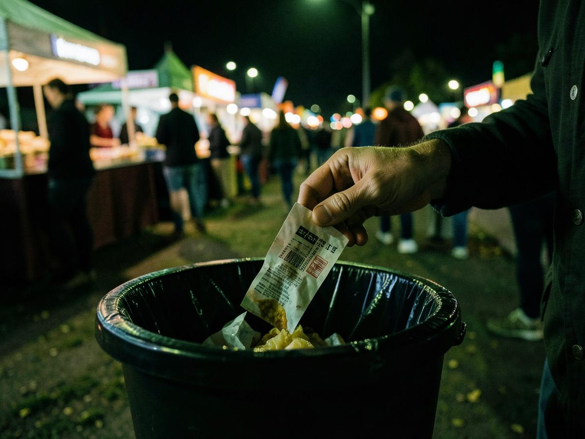
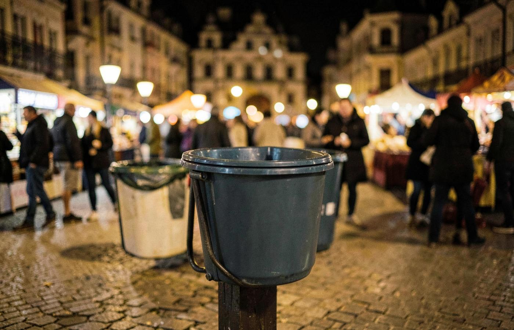

Limpeza
Resíduos no chão tornam o espaço menos agradável para todos.
Feira Limpa
Uma atitude simples ajuda a manter nossa feira mais limpa.
Entenda em 1 minuto ↓
É só um papel.
É só uma embalagem.
É só um guardanapo.

Resíduos no chão tornam o espaço menos agradável para todos.
A feira é um espaço compartilhado entre moradores, comerciantes e visitantes.
Pequenas atitudes individuais ajudam a preservar o ambiente coletivo.
Descarte.
Não deixe para depois.
Não deixe para outra pessoa.

Faça a sua parte
Use a lixeira.
Se não houver uma por perto, guarde seu resíduo.
Ajude a manter o espaço coletivo limpo.
🗑️ Lixeiras
disponibilizadas em pontos estratégicos

Tem algum resíduo seu?
Leve até a lixeira.
O espaço que você deixa hoje é o espaço que todos encontram amanhã.